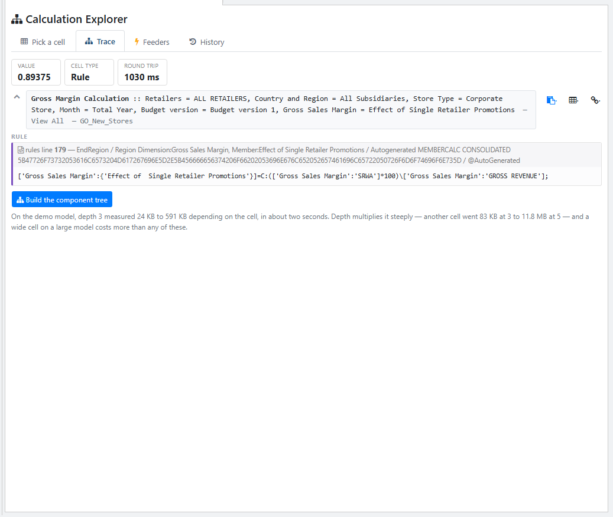
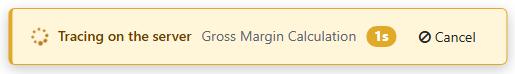
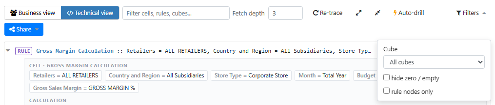
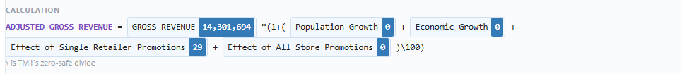
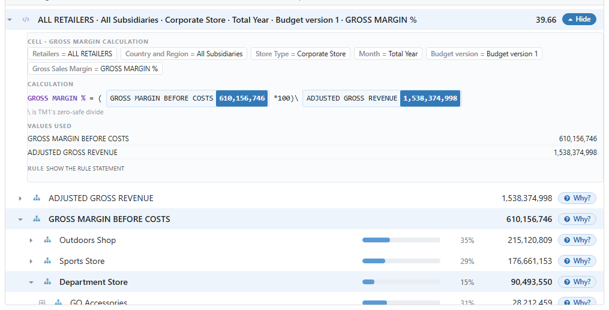
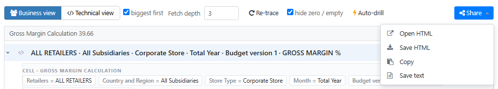
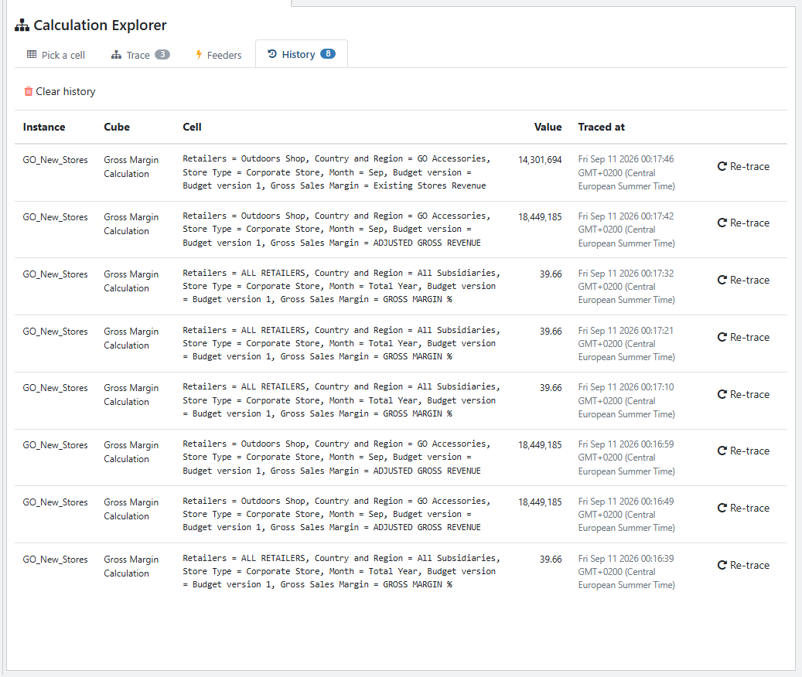
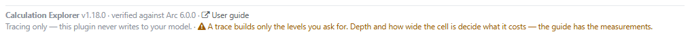

Where did this number come from?
Calculation Explorer follows a TM1 cell down through every rule, consolidation and cross-cube hop, names each step with its cube and full coordinates, finds each rule statement back in the rule file with its line number, and hands the whole thing to a colleague as one self-contained HTML file.
It only ever reads. Nothing in this plugin writes to a cube, a rule or a view.
New in v1.15.0 Every operand in a formula now leads somewhere. Click one and it either opens its own row in the tree or traces its own cell — see Clickable operands.
What it answers
You are looking at a number in a cube view and it is wrong, or surprising, and you need to know which rule produced it and from what.
Arc's own trace shows you the rule statement and the cell's immediate components. Calculation Explorer follows the whole chain, and answers four questions Arc's page leaves open:
- Which rule fired, and where is it? Statements come back from the API with their newlines stripped; the plugin finds each one in the cube's rule file and shows it in the author's own formatting, with its line number.
- What were the operands actually worth? The rule is rewritten as arithmetic with each operand's own value substituted in.
- Where did it read from? A cross-cube lookup shows the coordinates TM1
actually read, not the
!dimensionreferences the rule was written with. - How do I show someone else? One interactive HTML file, no server and no internet needed to open it.
Install it and open it
- Copy the
calculation-explorerfolder into Arc'spluginsfolder — the one next toarc.exe, usuallyC:\arc\plugins. - Hard-reload the Arc window: Ctrl+Shift+R (or Ctrl+F5).
- Open Tools → Calculation Explorer.
Step 2 is not optional and it is not the same as restarting Arc. Arc serves every plugin in one bundle that browsers are told to cache for a year, and that address does not change when a plugin changes — so without a hard reload you keep running the old copy. The same applies to every update you install later.
Letting it take over Arc's cell menu
Arc's cube viewer has its own Trace Calculation and Trace Feeders entries on the cell right-click menu. Two checkboxes on the first tab, under Open Arc's cell menu here, decide whether those entries open this plugin instead of Arc's built-in pages.
They are independent settings, so you can keep Arc's feeder page while calculation traces open here, or the reverse. Either can be turned back off at any time and Arc's own page comes straight back, with no reload.
The four tabs
![The Pick a cell tab: Instance GO_New_Stores, Start from A cube view, Trace depth 3, Rows per page 50, with Hide control cubes ticked and both boxes under Open Arc's cell menu here ticked. Below, the Gross Margin Calculation cube is selected beside its view list, and a context bar reads Corporate Store | All Subsidiaries | ALL RETAILERS | Budget version 1 over a grid of six measure rows from Existing Stores Revenue down to Economic Growth across Total Year and the first eight months. The four numeric rows carry their values in bold, and the rule-derived Population Growth and Economic Growth rows are shaded, their 0.00% greyed and not bold.](img/guide/01-pick-a-cell.png)
Gross Margin Calculation grid at the bottom,
rule-derived cells are shaded and consolidated cells are bold — but read the two
markers separately, because on any one grid they need not both be telling you something. The
context bar over this one reads Corporate Store | All Subsidiaries |
ALL RETAILERS | Budget version 1, and ALL RETAILERS and
All Subsidiaries are consolidations, so every value cell here sits at a
consolidated coordinate and the bold singles nothing out: all four numeric rows carry it,
and the two rows that do not are the ones TM1 reports as rule-derived instead. It is the
shading that is doing the work in this shot, marking
Population Growth and Economic Growth as the rule-derived
rows.Two of the controls in that top row are easy to skip past.
Rows per page is how much of the view the grid below fetches at a time,
and has no effect on what a trace costs. Hide control cubes keeps
TM1's }-prefixed control cubes out of the cube list on the left; it hides them
from the picker only, and a trace still follows the chain into one where a rule reads
it — which is how an attribute read shows up in a tree.
| Tab | What it holds |
|---|---|
| Pick a cell | Instance, where to start from, trace depth, rows per page, and the cell itself. The About line at the bottom carries the version numbers. |
| Trace | The result. Cards across the top, the cell reference under them, then the toolbar and the tree. The tab's badge counts the nodes in the trace on screen. |
| Feeders | Feeder statements and fed cells for the cell on screen. |
| History | Every trace you have run, with Re-trace. It survives restarts, because it lives in your Arc preferences. |
Picking a cell
| Way in | How |
|---|---|
| From a view | On Pick a cell, choose the instance, then a cube and a view (public or private), and click any cell in the grid. |
| From Arc's object tree | Right-click a cube → Calculation Explorer opens on that cube. Right-click a view and it opens with that view loaded, ready for a click. |
| From the cell itself | Right-click a cell in the cube viewer → Trace Calculation. Arc's own menu item opens this plugin on that cell and traces it. |
| Feeders from the cell | Right-click a cell → Trace Feeders opens the Feeders tab with that cell's feeders already checked. |
| By typing or pasting | Set Start from to Coordinates I type and fill the rows in, or paste a cell reference (below). |
| By MDX | An MDX statement works too, for a cell that is in no saved view. |
Pasting a cell reference
Right-click a cell in Arc's cube viewer → Cell Reference, select the whole table it shows, and paste it into the Paste a cell reference box, then press Use this reference. What the dialog puts on the clipboard is three tab-separated columns, which is exactly what the box expects:
Dimension Hierarchy Element … … …
Rows are matched by dimension name, so their order does not matter, and the hierarchy column is used for the trace — which is what makes a cell on an alternate hierarchy traceable at all. Arc's dialog does not name the cube, so pick the cube on the left first.
A two-column table, a plain comma-separated list in cube dimension order, and a
DB('Cube',…) formula all work as well. A paste that covers only some
dimensions is not rejected: the matched rows are filled in, you are told how many, and you
complete the rest by hand.
Two steps: the cell, then the tree
A trace happens in two steps, and the second one is the expensive one.
- The preview asks the server one small question — the value, the rule that produced it with its rule-file line number, the cell type, and the full coordinate. It cannot grow with how wide the cell is, because it asks for no components at all.
- The component tree is a separate, priced click: Build the component tree.

Gross Margin Calculation rule file, which is the thing to quote to whoever
maintains the rule. TM1's autogenerated rules carry a machine-written comment on that line,
which is what the long provenance text after the line number is. Nothing below the button has
been fetched yet, and the note under the button says what pressing it costs.For a great many questions — which rule is this?, is this a rule, a consolidation, or a number somebody typed in? — the preview is the entire answer and you are finished. The Feeders tab works off a previewed cell too, so a cell's feeders can be checked without building a tree at all.
Which gestures go straight into the tree
When you name the trace, the plugin traces. These four gestures ask for a tree, so the cell and then its tree arrive on their own with nothing to press in between:
- Arc's cell menu → Trace Calculation
- opening a link somebody sent you
- Re-trace on the History tab
- Trace this cell after typing or pasting coordinates
Clicking a cell in the grid is the one gesture that stops at the preview, and deliberately: clicking around a grid is not the same as asking for a tree.
Two cases where the preview alone tells you all it can, in opposite ways. A stored input says so, and there the preview really is the end of it: its value is its own, there is nothing underneath it to walk, and the button has nothing to fetch. A consolidation has no rule of its own, so the preview shows no rule and cannot — its value is the sum of its children, so there the button is not a shortcut you can skip but the only way forward: the tree is what shows you which children the value came from.
What a trace costs
Two things decide it, and only one of them is the depth. The other is how wide the cell is. Trace depth on the first tab sets how many levels the request asks the server to build, so lowering it really does make a big cell cheaper.
| Measured on the demo model | Response size | Read it as |
|---|---|---|
| Four cells, same cube, same default depth of 3 | 24 KB, 81 KB, 512 KB and 591 KB — each in about two seconds | A 25× spread between cells that sit one click apart. How wide the cell is matters as much as the depth. |
| One further cell — not one of the four above — with the depth raised a level at a time | 83 KB at depth 3, 1.1 MB at 4, 11.8 MB at 5, 37 MB at 6 | Depth multiplies whatever your cell costs, and the growth is steep. |
These are demo-model numbers, not a budget for your model The demo model's largest non-control dimension has 39 elements. A production dimension has thousands, and a consolidation over one returns thousands of components at the first level alone. No cell here can say what a wide cell costs on a real model.
So: start low and raise the depth a little at a time, and use the caret on a single row to go deeper from just there rather than deepening the whole tree. If a trace feels slow, a lower depth is the first thing to try.
While a trace is running
A trace is one piece of work done by the TM1 server, and on a large cell it takes 15 to 22 seconds. While it runs, the row of tabs carries a spinner, what is happening, which cube, and how long it has been going.
- The seconds come from TM1 itself, not from a stopwatch in the page. That matters when a connection drops: a page timer would keep counting and tell you a comforting lie, and this one stops telling you anything it cannot read from the server.
- It changes to Receiving the answer for the last stretch. The server has finished walking by then and the answer is still arriving. The seconds hold still at that point, because they are how long the walk took.
- It appears however you started the trace, including the ways where you clicked nothing on this page at all: Arc's cell menu, a link somebody sent you, or replaying an entry from History.
Clicking again does not make it faster, and the page will not let you. One trace runs at a time, the cell being traced is outlined in the grid, and a second click is refused rather than queued. The two fan-out actions — Auto-drill and Resolve labels — ask once, up front, and tell you how many traces they are about to request.
Two questions it may ask before starting
The server keeps working on a trace even if you close the page or reload it — an administrator can stop one, which is Cancelling a running trace below — so before starting a new one the plugin checks with TM1 and asks you first if something is already running.
| What you see | What is going on | What to do |
|---|---|---|
| Your last trace is still running on the server | You reloaded, or opened a second tab, while your own earlier trace was still going. This is the usual one. | Waiting is normally right — the answer is coming. Continue anyway if you no longer want that trace's answer. |
| Another user is running a cell trace | Somebody else is tracing on the same TM1 instance. Running two at once increases the server's memory use and slows both. | On a shared server, waiting a few seconds — or asking them — is often quicker than competing. Continue anyway if you would rather not. |
Both end in a choice: nothing here refuses you a trace. Two limits, so the check is not read as more than it is. Nothing is claimed when nothing is found — TM1 shows an administrator every running trace and shows everyone else only their own, so "no question asked" means nothing was seen, not that the server is idle. And if the check itself cannot be made, tracing goes ahead exactly as before rather than blocking you.
Cancelling a running trace New in v1.18.0
A trace that is taking too long can be stopped. While one is running, the strip at the bottom of the page carries a Cancel button beside the server's own clock; pressing it asks TM1 to stop that walk. This is an administrator action — if you are not an administrator on this TM1 server, the button is not there.

Three things worth knowing before you press it:
- It does not give memory back. TM1 keeps the memory it has already taken for this session, so cancelling frees the page and the server's worker, not the server's memory. What keeps a trace small is the depth you ask for — see What a trace costs.
- A cancelled re-trace gives you back the tree you had. Re-tracing at a greater depth replaces the tree on screen; if you stop that walk, the previous tree comes back rather than leaving you with nothing.
- An administrator can stop someone else's trace. Any running trace the server reports appears on its own line, naming the user, the cube and how long it has been going, with a Cancel of its own. That one asks you to confirm first, repeating all three. The other person's page stops with a notice saying the trace was cancelled on the server. A long user name — a CAM identity, say — is shortened to fit; hover it to read the whole one.
If the trace finished while you were reaching for the button, the page says so — that trace had already finished — and nothing else happens.
Reading a trace
The cell reference sits under the cards and stays on one line to leave room for the tree. The
chevron at its left unwraps it in full, and the small buttons at its right copy it — as
readable text, or as the Dimension / Hierarchy / Element table Arc's own
Cell Reference dialog produces, which pastes straight back into this
plugin. The link icon beside them is covered under
Sharing what you found.
A trace opens in the business view, and for most questions that is the one you want. The toolbar toggles to the technical view when you need cubes, full coordinates and rule statements on every row.
The business view
![The business view of a Gross Margin Calculation trace: seven cards read Value 39.66, Nodes 115, Frontier 96, Max depth 3, Rule nodes 1, Cubes touched 1 and Round trip 1028 ms, with the History badge on 1. A blue line under them reads that 96 of the 115 nodes in this trace stop at the depth you asked for, and the toolbar below it carries Fetch depth 3 and a Re-trace button. The traced cell's panel is open, its Calculation reading GROSS MARGIN BEFORE COSTS 610,156,746 times 100 zero-safe divided by ADJUSTED GROSS REVENUE 1,538,374,998, and those two components are the collapsed rows below it, biggest first.](img/guide/03-trace-business.png)
GROSS MARGIN BEFORE COSTS at 610,156,746 over
ADJUSTED GROSS REVENUE at 1,538,374,998. Those same two components are the rows
underneath, biggest first, each with a Why? pill of its
own.The technical view
![The same cell in the technical view, on a second run of it: the seven cards read the same Value 39.66, Nodes 115, Frontier 96, Max depth 3, Rule nodes 1 and Cubes touched 1 at a Round trip of 1052 ms, and the History badge has moved on to 4. The first row carries a RULE badge and reads Gross Margin Calculation :: followed by its full coordinate as dimension = element pairs, with that value at the right. The second row carries a CONSOLIDATION badge at 610,156,746 and its Calculation section reads Sum of 8 components, with Department Store, Direct Marketing, Equipment Rental Store and Eyewear Store listed under Values used.](img/guide/06-trace-technical.png)
Gross Margin Calculation :: then dimension = element pairs —
and rules are visible without opening anything. Note the second row: a consolidation has no
statement, so its Calculation section states the count of components
it summed instead.| Business view | Technical view | |
|---|---|---|
| Row label | only the part of the coordinate that changed | cube :: dim = el, dim = el, … |
| Breadth | one branch open at a time, with a breadcrumb of the path | the whole tree, expandable at once |
| Order | biggest contributor first (toggleable) | the model's own order |
| Zeros | folded into a + N with no value line | shown |
| Cube hops | named only when the cube changes | on every row |
| Rules | behind the Why? pill | always visible |
| Going deeper | just keep clicking: a row with nothing under it fetches its next level | a caret per row, Trace deeper from this cell |
Filters

The free-text box beside the button filters on cells, rules and cube names. The business view does not have the menu at all: it keeps hide zero / empty and biggest first directly on its toolbar.
What the row markers mean
- A green input chip means the trace has reached a stored cell: the
value was typed in or loaded, not calculated, and there is nothing beneath it. That is very
often the answer. Those rows are marked with a plain circle (
○), never the boxed plus (⊞). ⊞on a row means the opposite: this cell has coordinates, so a level below it can still be fetched and nobody has asked yet. Click it.- A plain triangle is the cheap one. It means the level below this row was
already fetched, so opening it costs no request at all;
⊞means one is needed. Figure 9 has both markers side by side. - A share and a bar appear only where the children genuinely add up to the parent — always for a consolidation, and for a rule only when the arithmetic checks out. A percentage you cannot trust is left out rather than shown.
- An italic label means that level came back without coordinates, so it is named from the rule it writes to. Resolve on the row, or Resolve labels in the toolbar, fetches the real ones.
- A cube name appears wherever the chain jumps cubes, including control cubes — which is how an attribute read shows up.
The detail panel
Why? on any row opens the same four sections, in the order you need them. The traced cell's own panel is already open when a trace arrives; every other row starts closed. An exported page opens the same way.

ADJUSTED GROSS REVENUE for one
store and month, and its 18,449,185 is GROSS REVENUE at 14,301,694 uplifted by
the one promotion operand that is not zero. Nothing was cut here — five components,
well inside the 12-row cap — so Values used is in the order the
formula reads them, not sorted. Under the panel, the + 3 with no value line is where
the business view folded away the zero rows, and the boxed plus on each component row means
a level below it can still be fetched.- Cell — the coordinate, one chip per dimension. An alternate hierarchy
reads
dimension:hierarchy. - Calculation — the rule rewritten as arithmetic with each operand's
own value filled in. Dimension qualifiers and set braces are dropped. A consolidation has no
statement, so it reads Sum of N components.
\in a formula is TM1's zero-safe divide, not a typo. - Values used — the components with their values, whether or not each matched an operand. The list is capped at 12 rows and says how many it left out; when a consolidation's list is too long to show in full it is sorted biggest first before the cut, so the largest contributor is never the one dropped. A list that fits is not reordered at all, and a rule's operands are never reordered: they stay in the order the formula reads them. The Sum of N components line above always counts them all.
- Rule — the original statement with its rule-file line number, collapsed.
A cross-cube lookup shows what was actually read
Where a rule reaches into another cube it usually writes !dimension references or
an attribute call, which tells you where it looked but not what it found. The
panel fills those coordinates in from the answer TM1 gave and highlights them. On the demo
model, a Gross Margin Calculation rule reading
Base Sales Forecast is written like this:
['Gross Sales Margin':{'Volume Discount', 'Existing Stores Revenue', …}] = N:DB('Base Sales Forecast',
!Country and Region, !Retailers, ATTRS('Gross Sales Margin', !Gross Sales Margin,
'}Map_}Link_Gross Mrgin Calc_3CBase Sales Forecast'), !Store Type, !Budget version, !Month);
and the panel renders it like this, with the substituted parts highlighted and the value the lookup returned at the end:
DB('Base Sales Forecast', Americas, Department Store, Volume Discount,
Franchise Store, Budget version 1, Mar) 95,577.52
Note what the attribute call became: Volume Discount. That result is very often
the thing you were trying to find out, and the rule text never shows it.
Hover a highlighted part to see the text it replaced. That text is in a tooltip, so a mouse is the only way to read it today — there is no keyboard or touch equivalent. Anything the rule wrote out in full stays as written: only what you could not otherwise see is filled in. Every substituted coordinate is read off the component TM1 returned for that lookup; this cell's own coordinates are never substituted into the rule text. And if a lookup cannot be tied to exactly one of the components TM1 returned, it is left exactly as the rule wrote it rather than guessed at.
Clickable operands New in v1.15.0

ADJUSTED GROSS REVENUE here, and the legend
under the formula is the reminder that \ is TM1's zero-safe divide rather than a
typo.Click an operand to follow it. Which of two things happens is a property of the operand, and hovering it tells you which — that is a tooltip too, so like the substituted text above it needs a mouse.
| The operand | A click | Cost |
|---|---|---|
| Matched — it shows a value | opens its own row where it already sits in this tree | No request. The node is already here. |
Unmatched — it shows ? |
traces the cell the reference names | One trace, through the same gated path Arc's cell menu and a link use. |
| Not pinned to a single cell | nothing — the chip is not clickable | A reference that would need a guess stays inert, because a guessed coordinate would spend a request on a cell nobody asked about. |
A chip is inert when the reference names no dimension, names a set rather than one cell, or names a dimension this cube does not have. Chips also stop advertising themselves while a walk or a preview is in flight.
What ? means It means no component TM1 reported
carried a value for that operand, and the app names two reasons. The common one is that
this node is as deep as the request went, so nothing below it was asked for;
the other is that the component was left out at the size limit. Neither
means the operand is missing from TM1, and clicking it fetches it. Note that an
unmatched cross-cube lookup shows no ?: nothing was asked about it, so
claiming absence would be a claim there is no evidence for.
v1.15.0 also fixed an operand that could read ? even though the server had
reported its value: an element name holding two consecutive spaces could not be matched to its
component.
Going deeper
A trace stops at the depth you asked for. The rows at that edge are where you carry on:
- In the business view, just keep clicking — a row with nothing under it fetches its next level.
- In the technical view, use the caret, Trace deeper from this cell, on any row. The result is spliced into the tree in place.
- Auto-drill follows the biggest contributor down for you and reports how many hops it took.

GROSS MARGIN BEFORE COSTS is open two levels down to
Department Store, and the two rows beneath it —
GO Accessories and Americas — carry
⊞ rather than a plain triangle. That is the depth-3 frontier:
⊞ is the control that fetches the next level from that node, which
is far cheaper than raising the depth for the whole tree. The rows above it have plain
triangles, so they are already in hand and open for free — including
ADJUSTED GROSS REVENUE, still collapsed at the top. Every row under
GROSS MARGIN BEFORE COSTS carries the share and bar described under
Reading a trace, because a consolidation's children really do sum to
it. The two rows directly under the root carry neither: the root is a rule dividing one
number by another, so its two components do not add up to it and a share of it would mean
nothing.A node marked components under here were left out at the size limit has more beneath it than was fetched — trace deeper from that node rather than raising the depth.
Sharing what you found

| Control | What you get |
|---|---|
| Link icon on the cell reference | a link that reopens Calculation Explorer on this cell and traces it |
| Share → Open HTML | the interactive trace in a new browser tab, straight away |
| Share → Save HTML | the same page saved as one file |
| Share → Copy | a plain-text version of the trace on the clipboard |
| Share → Save text | the plain-text version saved as a .txt |
The exported page
It is completely self-contained: no server, no internet, no add-ins. It carries the full collapsible tree, contribution bars, syntax-highlighted rules with their line numbers, a filter box, hide-zero and rules-only toggles, a cube filter, and both views. It follows the reader's light or dark preference and prints cleanly. It is the thing to attach to a ticket or send to a model owner who does not have Arc.
Sending someone a link
The link icon beside the cell reference copies an address that reopens this exact cell, at the trace depth you used. Paste it into a ticket, a chat, or a bookmark. It works for people who can reach your Arc and the same instance — the link carries the cell, not the data.
Copy the link from the button A link works opened in a new tab, from a bookmark, or pasted into the address bar of an Arc you already have open. But Arc tidies the address bar back to a bare instance address once the trace opens, so the address bar is not where the link is.
Checking feeders
If a rule-derived cell reads zero when it should not, a missing feeder is the usual cause. The Feeders tab answers two questions about the cell on screen, in three sections — and they point in opposite directions:
- Feeder statements — the feeder statements whose source area covers this cell.
- Cells fed from here — the cells those statements reach from it, with cube and coordinates, each carrying TM1's own answer to is that cell actually fed? Click a row to read the cell one dimension per line. With the first section, this answers what does this cell feed?
- Feeder check — the other direction, and the only section that can report a fault: rule-derived cells under this one that hold a value no feeder reaches. A row here means numbers are wrong somewhere below it. An empty list is the answer you want.
What the mark in front of a fed cell means. A green tick is TM1 reporting that a feeder reaches that cell. A red cross is the one to act on: a statement above names the cell, but nothing reaches it, so a rule value there reads as zero and every consolidation over it reads low. A grey question mark is neither — it means this server did not answer the question for that row, which is not the same as answering no, and the tab says so rather than showing a cross it cannot justify.
You can get here two ways: right-click a cell → Trace Feeders, which runs the check immediately, or trace a cell and press Check feeders for this cell. When you arrive from the cell menu without a calculation trace, Trace this cell's calculation runs one for the same cell — the coordinates are already filled in.
![The Feeders tab for the Gross Margin Calculation cell Outdoors Shop / GO Accessories / Corporate Store / Sep / Budget version 1 / Existing Stores Revenue. Feeder statements (1) carries one statement, whose source is the set of Existing Stores Revenue and New Stores revenue and whose target is GROSS REVENUE. Cells fed from here (1) names the GROSS REVENUE cell at that same coordinate in full, with a green tick in front of it, and the row is open: six indented lines underneath read Retailers = Outdoors Shop, Country and Region = GO Accessories, Store Type = Corporate Store, Month = Sep, Budget version = Budget version 1 and Gross Sales Margin = GROSS REVENUE. Feeder check (0) reads No unfed cells found, with a line explaining that the check looks for rule-derived cells holding a value no feeder reaches, so an empty list is the good answer.](img/guide/11-feeders.png)
Existing Stores Revenue for one store and month. TM1 calculates this one from a
link rule — it is one of the elements on the left of the Base Sales Forecast
statement quoted under The detail panel — and it is also
the source of a feeder statement, which is why this report is populated. That statement is
shown in full, source and target both —
['Gross Sales Margin':{'Existing Stores Revenue', 'New Stores
revenue'}] => ['Gross Sales Margin':'GROSS REVENUE']; —
Cells fed from here names the one cell it reaches, the
GROSS REVENUE cell at this same coordinate, and
Feeder check reads (0) — nothing under this cell holds
a rule value that no feeder reaches, which is the result you want from it. Two populated
sections and a clean check is the healthy shape of this tab.
The green tick in front of the fed cell is TM1's own answer that a feeder really
does reach it, and the row is shown open: clicking a fed cell lays it out one
dimension per line, which is how a six-member coordinate becomes readable.Two empty results that are normal, not faults
An empty Feeder check is a pass, not a silence. It lists only cells that hold
a rule value no feeder reaches, so nothing listed means it found nothing wrong — Figure
10 is exactly that case. Four things have to hold before it can list anything at all:
SKIPCHECK in the cube's rules (without it feeders are ignored entirely and there
is nothing to check); rule-derived cells in scope (a stored input or a pure consolidation has
nothing to be fed); one of them non-zero and unfed — a link rule fed from its
source cube counts as fed, and a feeder whose own source cell is zero never fired;
and a scan small enough for the server's own limit,
CheckFeedersMaximumCells, 3,000,000 cells by default. On a very wide
consolidation that limit is reached before the scan finishes, and the plugin says so rather
than reporting a pass it cannot support. Arc's own feeder page does not run this check at
all, which is why this tab does.
A cell that no feeder statement feeds from reports nothing. This
tab looks up the statements whose source area covers the cell you asked about, so an empty
report means this cell feeds nothing — not that nothing feeds it, and not that
anything is broken. Whether the cell is stored or rule-derived has nothing to do with it:
Existing Stores Revenue in Figure 11 is calculated by a link rule and still
feeds, whereas ADJUSTED GROSS REVENUE is a feeder target in this cube
and the source of no statement at all, so asking this tab about it reports nothing, here and
on Arc's own page. When that is what you get, the cell to ask about instead is the one on the
left of the feeder you are chasing.
History

When a trace is very large
Big consolidations are genuinely enormous: one cell of the demo model returns over 240,000 components in 15 to 22 seconds. Four caps keep the page usable, and each one tells you what it did instead of quietly dropping things.
| You see | What it means | What to do |
|---|---|---|
| N components were left out after the first 20,000 | the trace hit the node budget | lower the depth, trace a child cell directly, or use the caret on one node to go deeper from just there |
| N more rows are not shown at once | 800 rows are on screen already | collapse a branch, or narrow the filter |
| N components were not shown because a node had more than the render cap | one node has over 250 children | trace that child directly |
| A question before saving, naming the size | the export would be very large — a 20,000-node trace becomes an 81 MB page | trace a narrower cell for something you can email |
The budget is filled level by level rather than branch by branch, which is why a rule always shows all of its operands: what runs out is detail at the edge, not a whole operand.
If something looks wrong
First, note which build you are on. The bottom of the Pick a cell tab carries an About line.

| Symptom | Cause and fix |
|---|---|
| Arc's Trace Calculation or Trace Feeders still opens Arc's own page | That page's checkbox is unticked under Open Arc's cell menu here on the first tab. They are separate settings, so tick the right one. If Arc's own page still opens with the box ticked, hard-reload Arc (Ctrl+Shift+R) and report it. |
| A plugin update seems not to have installed | The browser is still running the cached bundle. Hard-reload. Restarting Arc does not do it. |
| The view grid is empty | The view has not calculated. Recalculate it in the cube viewer, then reopen it here. An empty grid is almost never "no data". |
| Arc handed over a cell this plugin could not read against the cube's dimensions | The plugin refused to guess and left the raw cell in the paste box — tracing the wrong cell would be worse. Fill the coordinates in by hand, and report it. |
| No TM1 instance is selected | The instance was still connecting when the page opened. Reopen the page once it is up. |
| A rule shows no line number | The statement could not be found in the rule file — usually a generated or macro-expanded rule. The trace itself is unaffected; only the line number is missing. |
| N candidate rule statements cover this cell | More than one statement matches the cell and TM1 does not report which one fired, so the first is shown. Judge it from the rule file. |
| A percentage you expected is missing | Shares are only shown where the children really do sum to the parent, and are withheld where a node's children were truncated by the render cap. |
An operand reads ? |
See Clickable operands — and click the chip to fetch it. |
What it does not do
- No sandbox or "as of" support — it reads the base data you are looking at.
- It cannot tell you which of several candidate rule statements actually fired; TM1 does not expose that. It can set aside the ones that are provably not this cell's — a statement naming a dimension the cube does not have belongs to a component, not to the cell — and it says how many it set aside.
- A cross-cube lookup that cannot be tied to exactly one returned component keeps its
!dimensionreferences. The value is still there under Values used. - The text a substitution replaced, and which way an operand chip will go, are both shown in tooltips — so both need a mouse. There is no keyboard or touch route to either today.
- Rule-file matching is textual — whitespace-insensitive, case-insensitive, comments ignored — so a generated rule may not be located. Element names are compared exactly, including their spaces.
- Feeder detail depends on the server: the extra feeder check usually returns nothing, and a cell that feeds nothing has nothing to report there.
- Element names containing a forward slash are not handled. Single quotes are.
- Row paging depends on the session keeping the cellset alive; where it does not, the grid falls back to one capped request and tells you how much it is showing.
- Very wide consolidations are capped — 250 components per node, 20,000 nodes per trace, 800 rows rendered at once. Every cap reports itself.